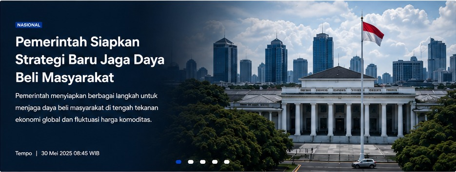
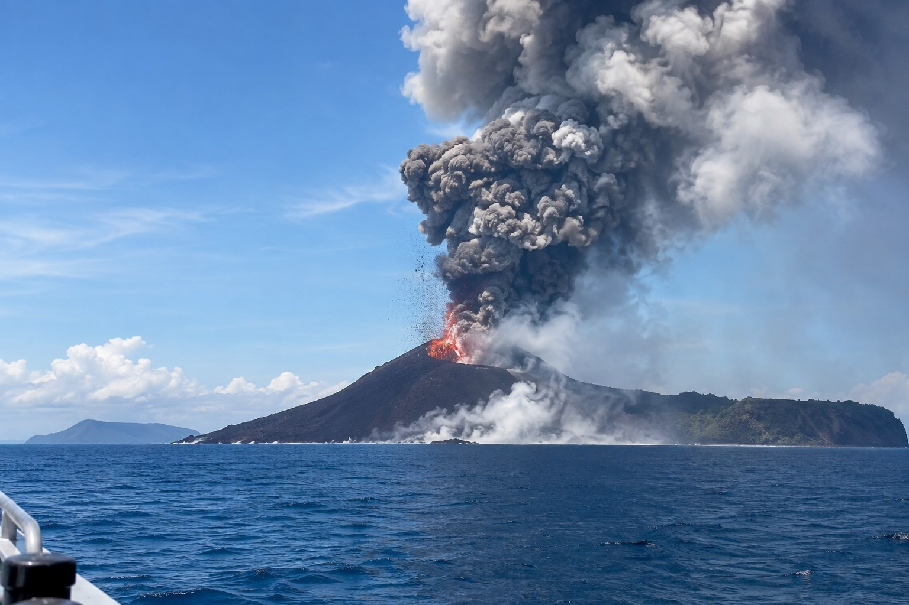

Berita Utama

Berita Terbaru
Lihat semua ›
NASIONAL
Aktivitas Gunung Api Kembali Dipantau, Warga Diminta Tetap Waspada
Petugas terus memantau perkembangan aktivitas dan mengimbau masyarakat mengikuti informasi resmi.
EKONOMI
Arus Logistik Nasional Terus Diperkuat untuk Menekan Biaya Distribusi
Pemerintah dan pelaku usaha menyiapkan sejumlah langkah untuk meningkatkan efisiensi.